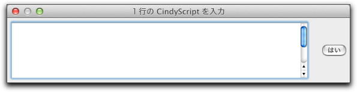
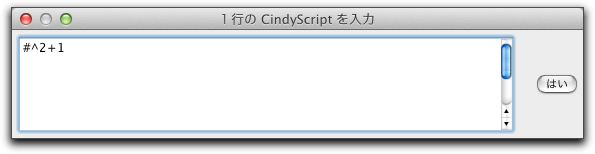

関数による変換
この変換モードは、他の全ての変換モードと全く異なります。他の全ての変換モードが直接幾何変換をコード化するのに対し、このモードは任意の関数によって自由に定義することができます。関数は CindyScript のコードで与えます。
そのような関数を定義するために、「関数による変換」モードを選んだ後、画面のどこかでクリックします。すると、関数を入力するウィンドウがポップアップします。関数は次の自由変数に対する関数でなければなりません。この変数の名前は、 "#" ( CindyScript における一般的な実行変数), "x", "y", "z", "t", あるいは "v"です。幾何の要素の名前と重ならないように選ぶ必要があります。
 |
| 関数による変換の入力ウィンドウ |
関数では、変数に(x, y)座標もしくは複素数を表すベクトルも使えます。関数がベクトルを必要とするならばベクトルを返さなければなりません。関数が複素数を必要とするならば複素数を返さなければなりません。
他の変換と同様、変換が定義されると表示ボタンが作られます。他の変換とは対照的に、関数による変換は点の写像だけを作ります。直線や円、楕円のような複雑な図形は写すことができません。関数は点がどのように他の点に写されるかを記述していなければなりません。ここで２つの変形が認められます。点は２次元ベクトルまたは複素数( x座標が実部、y座標が虚部)とみなされます。
次の式は、点を複素数と解釈する多項式によって定義される関数の簡単な例です。
 |
| 複素関数の定義 |
この変換を適用すると、関数の結果を表す新しい点を生成します。次の図は点Aとその像を示します。さらに、円周上を動く点Aの軌跡が表示されています。
 |
| 関数を点に適用した |
関数による変換と反復関数系 (IFS)
関数による変換は、反復関数系に対して特に有効です。典型的な例が 「ジュリア集合」です。ジュリア集合は２つの関数
+sqrt(z-c) と -sqrt(z-c)による反復関数系で定義することができます。ここで "c" はある定数で、 "z" は複素数変数です。これらの２つの関数を変換として定義した後、この関数を 反復関数系 モードで使うことができます。次の例では、定数 "c" を、点 A によってコントロールします。２つの関数は次の２つの式で定義されます。sqrt(#-complex(A))
-sqrt(#-complex(A))
結果として生じる絵は、Aの位置に依存します。1つの例は、つぎで示されます：
 |
| 変換関数によるジュリア集合 |
より高度な絵を、 CindyScript でプログラムした色のプロットを用いた反復関数系によって作ることができます。色は、関数
z^2+c を繰り返して、異なる初期値と関数値の絶対値が２を超えるまでの回数でプロットされます。m=40; f(x):=x^2+complex(A); g(y,n):=if( or(|y|>2,n==m), n,g(f(y),n+1) ); colorplot((1-g(#_1+i*#_2,0)/m),B,C,startres->20,pxlres->1)
反復関数系の結果として得られる図は次の通りです。
 |
| 変換関数とカラープロットで定義されたジュリア集合 |
Page last modified on Thursday 23 of February, 2012 [10:50:39 UTC].
The original document is available at
http://doc.cinderella.de/tiki-index.php?page=Transformations%20by%20FunctionsJ